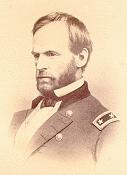

Gen. Sherman And His Boys In Blue

General William T. Sherman
Hail, glorious Chief! the country's pride,
For victory follows thee;
Thy fame is spreading far and wide,
Great Chieftain of the Free!
The bravest army in the world
Is being led by you,
And Freedom's banner is unfurl'd
By Bonny Boys in Blue.
CHORUS - General Sherman, O!
General Sherman, O!
The Boys in Blue will fight with you,
General Sherman, O!
In thee the country's hope is placed,
To put rebellion down;
The Boys in Blue the foe have faced,
And thou hast led them on,
Where Sherman led they followed on,
Brave deeds they dared to do,
And victory was always won
By Bonny Boys in Blue.
General Sherman, O!
On Shiloh's bloody battlefield
He met old Beauregard,
Who found that Sherman would not yield,
And he took it very hard;
He'd water his horse in the Tennessee,
That's what he said he'd do,
But Billy Sherman got in the way
With his Bonny Boys in Blue.
General Sherman, O!
And when the Rebs on Vicksburg's heights
Were all corralled by Grant,
Joe Johnston thought he'd give us fits,
But Sherman said, "you can't."
Joe Johnston found there were some things
That he could never do;
He has to run when Sherman brings
His Bonny Boys in Blue.
General Sherman, O!
On Mission Ridge he met the foe,
With Thomas and with Grant,
And on that glorious field, you know,
Our banners they did plant.
Old Bragg and all his army fled -
What else could Braxton do?
When Grant and Sherman nobly led
The Bonny Boys in Blue.
General Sherman, O!
Atlanta next was Sherman's aim,
Though Dalton blocked the way;
But flanking was the kind of game
That Sherman knew would pay.
Joe Johnston found that to retreat
Was all the way to do,
For it was dangerous to meet
The Bonny Boys in Blue.
General Sherman, O!
From Dalton down to Kenesaw
Joe Johnston did retreat;
From there he found he must withdraw,
Or meet a sore defeat.
And when within Atlanta's walls,
Says Hood, "I'll show you, Joe,
That Sherman soon before me falls,
And all his Boys in Blue."
General Sherman, O!
On the twenty-second of July
Our brave McPherson fell;
A tear-drop stood in the soldier's eye
For one they loved so well.
But Logan nobly filled his place,
And put the Rebels through.
The Johnnies found they could not face
The Bonny Boys in Blue.
General Sherman, O!
On the twenty-eighth the Johnnies came,
With whisky feeling good,
But Logan understood the game,
And cleared out Johnny Hood.
When Sherman left Atlanta's front,
Says Hood, "He's gone, I'll vow;"
But he soon found himself outflanked
By Bonny Boys in Blue.
General Sherman, O!
Says Hood, "I'll try the flanking game,"
But he didn't make it pay -
For Thomas brought old Hood to shame,
While Sherman went his way.
Down through Georgia Sherman went,
Cut Rebeldom in two,
And in Savannah pitched his tent,
With all his Boys in Blue.
General Sherman, O!
For General Sherman then we'll shout,
And Charleston next must fall;
The Boys in Blue will clean them out,
Old Beauregard and all.
This base rebellion soon will end,
The bottom's falling through;
Hurrah for General Sherman then,
And the Bonny Boys in Blue.
General Sherman, O!
From: War Songs Poems and Odes by R.W. Burt
Peoria Illinois 1909